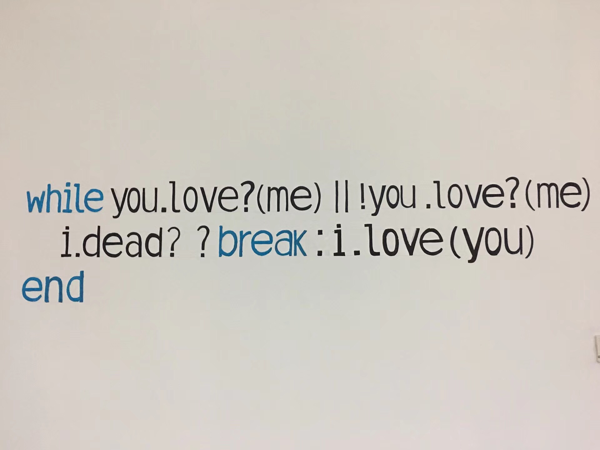

还有什么理由不奋斗
好的程序员即使在过单行道时也总是会环顾两边。

iPhone X 都可以人脸识别了，电子身份证即将面世了，Goole 又要放大招了（HTC 被收购），闲得无聊可以跟手机聊会天了，或许有一天人们再也不用养宠物了，机器人美女可以解决你的空虚寂寞了，，，那么你，还有什么理由不去努力奋斗了。
1
前几天看到一篇文章，叫做你的见识，决定了你能走多远，真是这样，自己深有体会。还记得第一次在北京坐地铁，总是害怕坐过站，人多的时候害怕挤不下去。后来生活了一段时间，就连早上7，8点西二旗的13号线都能挤上去，还有什么做不了的。离开北京，来到二线城市不算是决策的失误，只要还有一颗年轻向上的心，也可以继续做自己喜欢的事，敲自己喜欢的代码。很多人会抱怨北上广房价高，空气不好，但还是继续待着不离开，大部分原因是由于他们有一颗年轻不服输的心。在那里是人才的聚集地，也是知识的发源地，很多创新的想法都起源于这些地方。
2
我关注的一个公众号作者，我们都叫他“张哥”（不是他年龄大），他生活在上海，是一个 Android 程序员，活跃于各大社区，如果你经常逛知乎，玩公众号或者知识星球，应该能找到他的身影，常常分享一些赚钱的方法，很多还是挺靠谱的，我自己也试过几次，还是可以的。为什么说这个人呢，前几天他分享了一篇叫做 一位读者关于买房的困惑 的文章，对我启发很大，前段时间一直处于低迷状态，其中就有房子的原因，甚至浮现了回老家的念头。他说的很对，在大城市生活的人，其见识、视野绝对是我们无法比拟的。虽然我们在所在的城市买不起房，但是我们还年轻，就算是人生的四分之一还过一点已经没了，我们依然有不服输的心，有好的想法，有惊人的创意；就算没有创意没有想法，我们还有附带中华民族的优良传统，为自己的下一代着想的无私奉献。如果我现在回去了，那么我的下一代，还会背着行囊走同样的路，他们还是会面临着高房价的威逼，而站在岔路口徘徊，所以，，，还有什么理由不奋斗呢。
3
PS:还有什么理由不奋斗…

更多文章请关注微信公众号： zhiheng博客
如果文章对你有用，转发分享、点赞赞赏才是真爱 [斜眼笑]